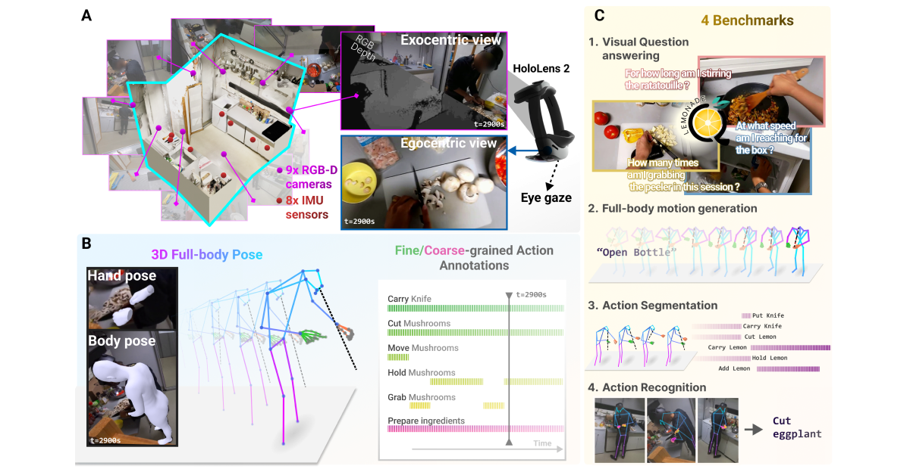
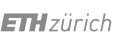

Behavior understanding!
Understanding behavior requires datasets that capture humans while carrying out complex tasks. The kitchen is an excellent environment for assessing human motor and cognitive function, as many complex actions are naturally exhibited in kitchens from chopping to cleaning. Here, we introduce the EPFL-Smart-Kitchen-30 dataset, collected in a noninvasive motion capture platform inside a kitchen environment. Nine static RGB-D cameras, inertial measurement units (IMUs) and one head-mounted HoloLens~2 headset were used to capture 3D hand, body, and eye movements. The EPFL-Smart-Kitchen-30 dataset is a multi-view action dataset with synchronized exocentric, egocentric, depth, IMUs, eye gaze, body and hand kinematics spanning 29.7 hours of 16 subjects cooking four different recipes. Action sequences were densely annotated with 33.78 action segments per minute. Leveraging this multi-modal dataset, we propose four benchmarks to advance behavior understanding and modeling through 1) a vision-language benchmark, 2) a semantic text-to-motion generation benchmark, 3) a multi-modal action recognition benchmark, 4) a pose-based action segmentation benchmark. We expect the EPFL-Smart-Kitchen-30 dataset to pave the way for better methods as well as insights to understand the nature of ecologically-valid human behavior.
Dataset and Benchmarks
RGB videos from the 9 cameras + egocentric camera recorded at 30 FPS with a resolution of 1920x1080 pixels.

60,189 Actions
Composed as the combination of 33 verbs and 79 nouns for 763 fine-grained actions and 6 activities.
Precision tracking of 3D human motions, enabling deep kinematics analysis of cooking behaviors.
Standardized vision, language, and pose benchmarks to test state-of-the-art modeling methods.
Multi-Modal Camera Setup

Behavior annotations
The EPFL-Smart-Kitchen is the perfect dataset for studying human behaviors.
Dense action annotations, the EPFL-Smart-Kitchen contains up to 33 action annotated per minute.
Hierarchical behaviors, both short-term actions and long-term activities are annotated.
Verb definitions. Each action is annotated following a clear definition of what the action means, avoiding language confusions.

Full-Body 3D pose estimation
Using the multiview recordings, we estimate accurate 3D body pose, 3D hand pose and eye gaze from the video recordings.
Download our dataset!
Feel free to download the EPFL-Smart-Kitchen-30 dataset from the links below:
The EPFL-Smart Kitchen
Densely Annotated Cooking Dataset with 3D Kinematics to Challenge Video and Language Models

Connect with us
Feel free to contact us by email if you have any questions or need help.


Special thanks to Joeséphine Raugel and Federica Smeriglio, for their support in setting up the motion capture system and data collection.